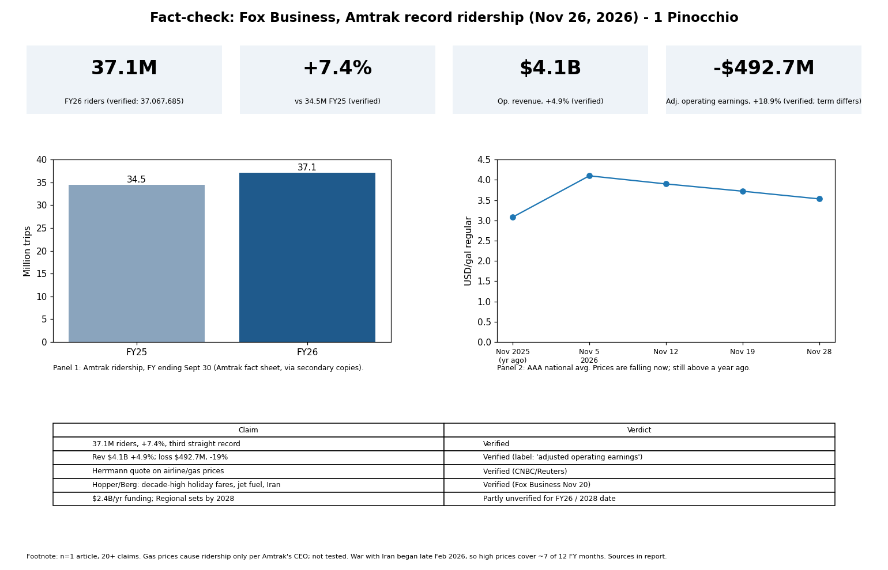

Amtrak record-ridership story: accurate on the numbers, 1 Pinocchio for implied causation

Findings: 1 Pinocchio
Every checkable figure in the Fox Business piece (Nov 26, 2026) holds up: 37.1 million trips in the 12 months to Sept 30, 2026, up 7.4% from 34.5 million; operating revenue $4.1 billion, up 4.9%; adjusted loss $492.7 million, 18.9% better than FY25; third straight record year. Amtrak's own ridership page confirms the 37.1M and 7.4%; secondary copies of its fact sheet give 37,067,685 vs 34,528,695. Quotes from Interim President Byl Herrmann match CNBC/Reuters. Hopper economist Hayley Berg's decade-high holiday airfare and jet-fuel statements match Fox Business's own Nov 20 story.
- Misleading framing (the reason for 1 Pinocchio): the headline says gas prices drive riders to trains, but the only evidence is Herrmann's own belief ("I have no doubt..."). Amtrak also cited infrastructure reliability, new trainsets, the World Cup and the 250th anniversary. Growth was led by state-supported routes (+9.5% to 16.33M, per secondary reports). The Iran war that lifted fuel prices began in late February 2026, so high prices covered only about 7 of the 12 fiscal months. No source tests the causal claim.
- Terminology: Amtrak calls the $492.7M "adjusted operating earnings" (unaudited), not "adjusted net loss". Trains.com reports a $494.7M accounting operating loss; one outlet only, unconfirmed.
- Not fully verified: "$2.4 billion a year" in recent funding is confirmed for FY2024 and FY2025 only; I found no FY2026 full-year total (a CR and an $807M act appear in Amtrak's filing). "$22 billion over five years" is correct (IIJA advance appropriations FY22-26). "Northeast Regional trainsets replaced by 2028": Amtrak says Airo sets begin Northeast Regional service late 2027, so full replacement by 2028 is plausible but unconfirmed. The NY-Washington 2.5-hour Acela goal is reported as Herrmann's aspiration; I found no Amtrak document for it.
- Could not access: trains.com and railwayage.com returned HTTP 403; the full Amtrak release text was only available through reproductions. The Amtrak media page lacks earnings figures.
What would change the grade: a published Amtrak study attributing riders to fuel prices would drop it to 0; evidence that growth came mostly from before the price spike would raise it to 2.
Claim table
| Claim | Verdict | Source |
|---|
| 37.1M riders, 12 months to Sept 30, +7.4% | Verified | Amtrak Media FY26 page; fact sheet copies |
| Third straight record year | Verified | Amtrak FY25 release (34.5M record), FY26 |
| Revenue $4.1B, +4.9% | Verified | Amtrak; CNBC |
| Adjusted net loss $492.7M, -19% | Verified, label differs | Amtrak (adjusted operating earnings, unaudited) |
| Herrmann quotes (gas/airfare; multi-year funding) | Verified | CNBC/Reuters Nov 24 |
| Acela replacement began last year | Verified (Aug 28, 2025) | Amtrak Media |
| $22B approved 2021 over five years | Verified | Amtrak audited statements; CRS |
| $2.4B/yr recent funding | Partly (FY24, FY25) | Amtrak FY2025 MD&A |
| Holiday fares highest in 10+ years, Berg, Iran | Verified | Fox Business Nov 20; Hopper |
| Gas prices high | True but falling: AAA $4.10 (Nov 5) to $3.53 (Nov 28) vs $3.08 a year ago | AAA |
Sources
- https://media.amtrak.com/2026/11/fy26-year-end-ridership/
- https://www.cnbc.com/2026/11/24/amtrak-sets-ridership-record-amid-rising-gas-prices.html
- https://www.foxbusiness.com/economy/holiday-airfares-hit-highest-levels-decade-jet-fuel-prices-surge
- https://www.american-rails.com/amtrakfy26.html ; https://www.railway.supply/amtrak-ridership-hits-record-37-1-million-led-by-state-supported-routes/
- https://gasprices.aaa.com/2026/11/
- https://media.amtrak.com/2025/08/amtrak-nextgen-acela-debuts-on-august-28/ ; https://media.amtrak.com/2026/11/amtrak-expands-airo-fleet-with-higher-capacity-trains/
- Amtrak FY2025 Management Discussion and Analysis (amtrak.com)
Confidence: high on ridership, revenue and quotes; medium on funding and 2028 timing.